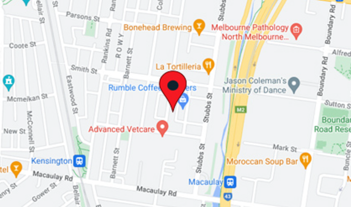

Address：5/47 Wattle Street, Balmain, Sydney, NSW.
Quality courses
We offer a state-of-the-art curriculum that combines theory and practice to prepare students for a successful future. Join us and start your path to success.
Quality education team
Our educational institutions have an excellent team of professional educators who not only have strong academic backgrounds, but also have extensive industry experience. Each member is passionate about bringing out the best in their students and is committed to providing high-quality teaching. We believe that through professional guidance and support, students can achieve academic and professional excellence.